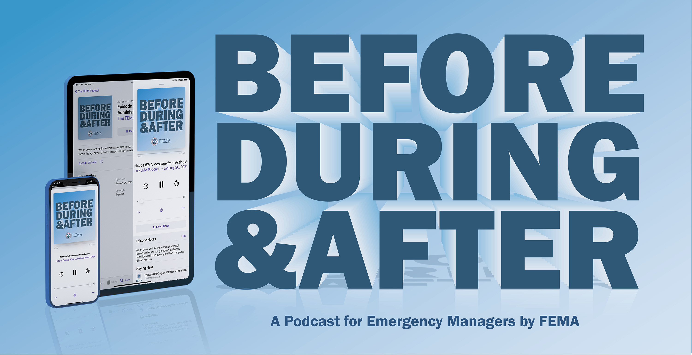

"Before, During & After" is a podcast for emergency managers. Join us for insights into where emergency management is headed, conversation about preparing for the threats of tomorrow and how everyone has a role in keeping communities safe from disaster.
Join podcast host Mark Peterson as we cover FEMA’s work in implementing its strategic plan, as well as recent disaster recovery efforts and resources available to better prepare for future risks.
Listen to the Podcast
Latest Episode
Episode 141: Preserving Natural and Cultural Heritage to Meet Community Resilience Goals
In this episode, we explore the responsibilities of FEMA's Environmental and Historic Preservation Program - how it operates during and after disasters and why preserving our natural and cultural heritage is essential for resilient recovery.
Search All Podcast Episodes
FEMA's Environmental and Historic Preservation Program, EHP, is crucial to ensuring that our recovery and grant efforts respect and also protect environmental and historic sites, even in the wake of disasters. So, in this episode, we get down to the basics and explore the responsibilities of the EHP program - how it operates during and after disasters and why preserving our natural and cultural heritage is essential for resilient recovery. Whether you're a history buff or an environmental enthusiast, or simply curious about FEMA's multifaceted role, this episode is for you.
On today's episode, we have a really exciting conversation that we'd like to highlight for you. FEMA was thrilled to recently host a joint FEMA virtual town Hall with our colleagues at the Cybersecurity and Infrastructure Security Agency - CISA. FEMA Administrator Deanne Criswell joined CISA director Jen Easterly for a special fireside chat where they discuss the crossover in our two mission spaces and our shared commitment to resilience and unity. FEMA and CISA often work hand-in-hand to keep communities across our nation safe. An issue surrounding cybersecurity and infrastructure security continue to be increasingly important areas of focus for all emergency managers. So, to that end, we wanted to represent their conversation for you here on today's episode. I hope you enjoy this fantastic conversation.
In the aftermath of disasters, when FEMA's assistance begins to phase out, the critical role of philanthropic organizations becomes increasingly apparent. In this episode, we explore how disaster philanthropy functions from the initial response phase to long-term recovery and resilience building. We'll delve into real examples of how philanthropic support has made a difference in communities across the country—from providing immediate aid to vulnerable populations to investing in long-term recovery initiatives. We'll discover how these organizations work hand in hand with local stakeholders to build resilience and create sustainable solutions and uplift communities on their journey towards recovery and resilience.
We're diving into a monumental topic for August, which is National Resilience Month, and it is all things Hazard Mitigation Assistance Grant programs, or HMA grants. These programs play a critical role in helping communities across the nation reduce the impacts of disaster. So, we're gonna be exploring how the grants work, the types of assistance available, the benefits they bring to the communities, and understand the application process to highlight successful projects. We'll cover everything you need to know about leveraging these grants for disaster mitigation and resilience. So, whether you're a community leader, emergency management professional, or simply interested in the disaster resilience project and what FEMA and the federal government have to offer, you're gonna have an opportunity to be informed and engaged throughout this episode.
If financial resiliency is an individual or family's ability to handle financial shocks and adjust to financial changes, there is no greater shock than a disaster. They cause both short and long-term financial challenges for survivors. While at times complex, financial resiliency is also full of opportunity to improve our ability to adjust and overcome those challenges that directly impact our ability to recover from emergencies. So, on today's episode, we focus on building financial resiliency before, during, and after disasters, and how financial resilience is far beyond building a savings account.
Subscribe
FEMA's "Before, During, After" podcast is available on Apple iTunes and Spotify to stream or download. Approximately 20 to 30 minutes in length, new episodes are posted bi-weekly and include transcripts.

Questions or comments? Send an email to FEMA-podcast@fema.dhs.gov.
Partner Podcast
U.S. Fire Administration Podcasts
Join the U.S. Fire Administration (USFA) and our nation's fire and emergency medical services (EMS) experts as we learn to reduce fire and life safety risks to our communities and emergency responders.
Listen to Episodes